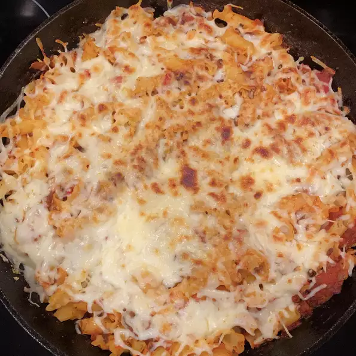

Lasagna recipe

Description
This is an easy and super delicious lasagna
receipe for the whole family to enjoy.
Ingredients
- 1/2 pound ground beef
- 1/2 (28 ounce) jar spaghetti sauce
- 1 (14.5 ounce) can diced tomatoes
- 1.2 onion, chopped
- 1 clove garlic, minced
- 2 teaspoons dried basil (optional)
- 2 teaspoons dried oregano (optional)
- 1 teaspoon salt
- 1 teaspoon black pepper
- 2 cups dried mafalda noodles
- 1 cup shredded mozzarella cheese
Steps
- Cook and stir beef 5 to 7 mintues.
- Add spaghetti sauce, tomatoes, onion, garlic, basil, oregano, salt, and pepper. cook over low heat for about 15 minutes.
- Cook noodles at a boil for about 8 minutes.
- Add cooked and drained noodels to the sauce and sprinkle mozzarella cheese on top.
- Set an oven rack about 6 inches from the heat and preheat the oven's boiler.
- place skillet under the hot broil and cook until cheese is golden, 3 to 5 minutes.